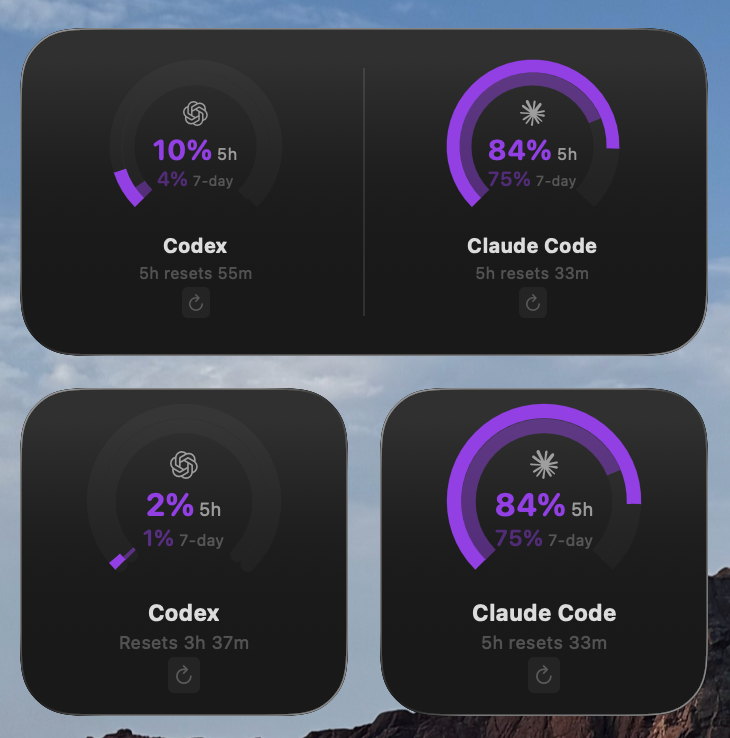

A Glanceable Question Was Turning Into A Tab Hunt
AIQuota started with a small interruption that kept repeating. Once Codex and Claude Code became part of my daily practice, quota state began shaping real decisions in the middle of active work. Could I stay on this thread? Should I switch tools? Was I closer to a limit than I realized? What looked like an account detail started behaving like workflow infrastructure.
Getting that answer was disproportionately heavy. I had to leave the editor, open a browser, navigate to provider pages, and mentally translate two different systems by hand. The question was lightweight and frequent. The path to the answer was neither.
That mismatch clarified the product quickly. This did not need to become a dashboard. It needed to be a native utility that lived where the question actually appears: in the background of active work. Put the answer in the menu bar, make it legible in a glance, and keep the setup calm enough that the product feels like part of macOS instead of a sidecar admin tool.
Research Started With Translation, Not Fetching
The hard part was not fetching usage data. It was translating two unlike provider systems into one readable decision surface.
Codex leans on a weekly cap with approximate message counts. Claude combines a rolling 5-hour window, a 7-day allowance, and Max-plan overflow credits. A literal presentation of both would have been technically accurate and mentally noisy. The job was to preserve the nuance without forcing the user to relearn each provider's logic every time they checked in.
So the early work centered on normalization. What is the common question across both systems? Which details matter before the popover opens, and which can wait until a closer look? How much provider-specific context has to stay visible for the product to feel trustworthy instead of falsely simplified? I treated that translation layer as the product, not as presentation polish after the data model was solved.
That framing shaped the trust model too. Browser-session authentication, Keychain storage, resilient refresh behavior, clear reset timing, and threshold-based notifications were not implementation trivia. They determined whether the utility felt dependable enough to check casually and trust quickly. In products this small, trust is often built from details users could not list individually, but would notice immediately if they failed.
The First Surface Had To Answer Fast
One of the most important product choices was resisting the urge to over-explain on the first surface. The menu bar icon should answer the ambient question before the popover opens, and the popover should extend that answer rather than restart the story with a wall of detail.
That led to a layered model: ambient status first, compact comparison second, richer account context third. That hierarchy is what keeps AIQuota feeling like a native utility instead of a shrunken analytics product.

A Visual Grammar For Unlike Systems
Once the translation problem was clear, the interface needed a visual grammar that could make unlike provider systems feel coherent without pretending they were the same. Dual-arc gauges, plan badges, credit counts, window labels, reset times, and freshness indicators became the vocabulary. The goal was not visual sameness. It was reading consistency.
Color and motion helped turn the app from passive reporting into a decision tool. As usage approaches a limit, the interface shifts from calm to warning states before exhaustion. That gives the user runway: keep going, switch tools, or pause before the answer becomes “no.”
That led to a few explicit product choices. Gauges prioritize percent used over raw remaining credits because the real question is risk, not accounting. Warning thresholds fire early on purpose. The menu bar owns the first answer because it is the lowest-friction checkpoint during active work, and widgets extend the same language into more ambient contexts without pulling the product toward dashboard sprawl.
The boundary between specificity and clutter kept mattering. The best version of AIQuota is not the one with the most fields. It is the one that makes the next decision obvious in a second, then rewards a closer look with enough supporting context to feel trustworthy.


Outside Signal
“What stood out to me is how focused the experience is. It solves a clear problem, stays within its bounds, and doesn’t overreach.”
— Daniel Hairston, on AIQuota’s precision and restraint.
After Launch, The Work Was Mostly Subtraction
Once the first release worked, the next phase was not about piling on adjacent features. It was about making the utility quieter, steadier, and easier to trust. Widgets extended the product into more ambient contexts. Notifications became more useful as thresholds and language tightened. Better recovery and refresh behavior reduced the amount of babysitting the app required. Silent auto-update behavior helped it feel more like infrastructure and less like a project asking for attention.
Much of that refinement sat below the visual layer. Polling and cache freshness had to feel accurate without becoming noisy. Notifications needed enough lead time to be helpful without turning into alert fatigue. Widgets, popover state, and settings had to stay in sync across refreshes, failures, and recovery. In a utility this small, QA is product design.
That loop matters to me because it reflects a broader product philosophy. Mature utility design is often about subtraction, sequencing, and restraint. You can feel whether a product is trying to be admired or trying to be relied on. AIQuota gets better each time it becomes easier to ignore until the moment it matters.
Shipping in the open sharpened that loop further. Public release created tighter feedback around setup clarity, edge cases, and which details people actually cared about once the tool became part of their working habits.
What Shipping AIQuota Reinforced
AIQuota shipped as a notarized macOS app with menu bar monitoring, widgets, notifications, and support for both Codex and Claude Code. The current release is available as an open-source GitHub project with downloadable desktop builds, and it continues to evolve through polish passes that improve clarity more than breadth.
More importantly, it validated a product pattern I care about. As AI tools become everyday infrastructure, a layer of adjacent workflow problems emerges around them. Some of the best opportunities are not bigger assistants. They are thinner native utilities that remove friction at the edges of real working habits.
This project also reinforced something I believe strongly: small utilities still demand serious product judgment. The right answer was not more detail, feature sprawl, or a billing-style dashboard. It was a calm, legible answer to a human question in the middle of active work: am I safe to keep going?